AI for a Sustainable Future
Sustainability Lab · IIT Gandhinagar
We build AI that serves both people and the planet — from air quality and health sensing to energy and Earth observation.
The lab is led by Nipun Batra. Our alumni have gone on to Cambridge, Microsoft Research, Google DeepMind, CMU and industry.
Recent recognition: Best Paper Runner-Up at BuildSys 2026, the ACM e-Energy Test-of-Time Award 2025 for NILMTK, and the ACM SIGEnergy Rising Star 2025. Work published at NeurIPS, KDD, AAAI, IMWUT, BuildSys and UbiComp.
Now recruiting PhD students & interns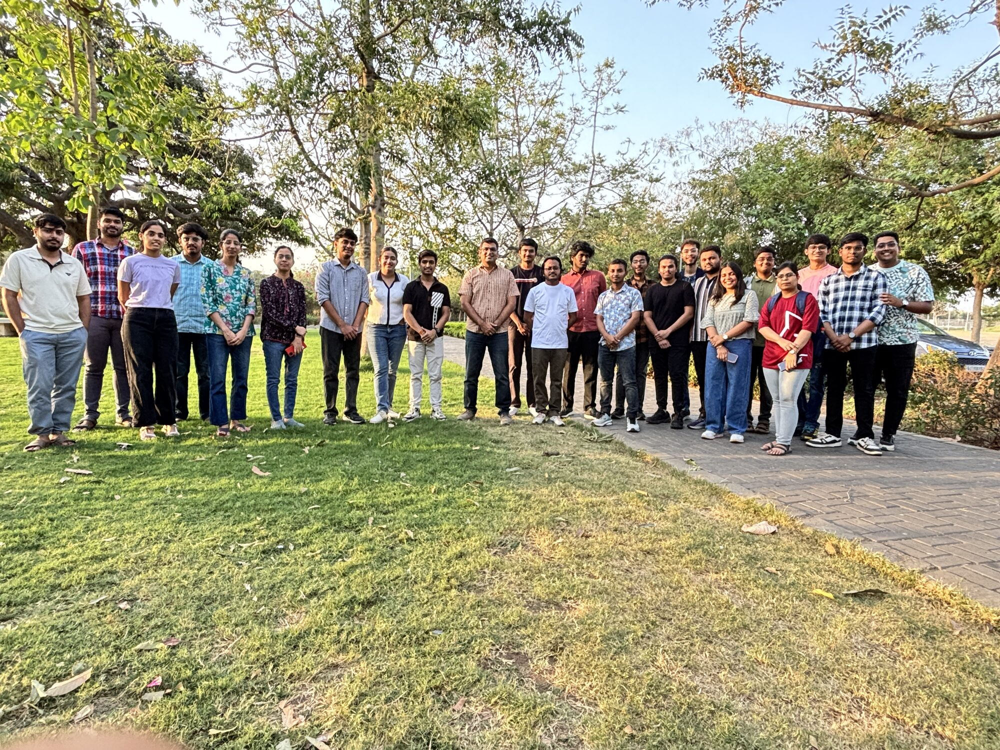
Research
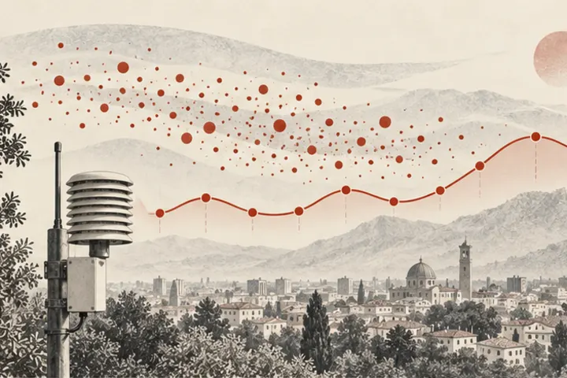
Clean AirSensors, models and LLM tools for cleaner cities.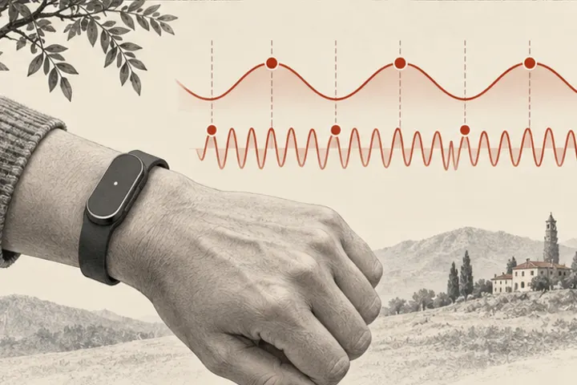
Health SensingCameras and wearables for breathing and metabolism.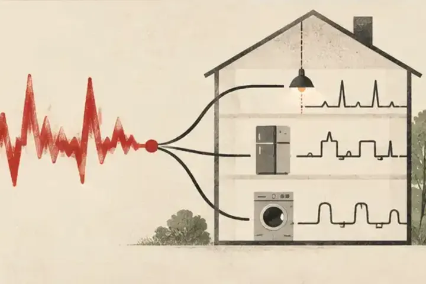
EnergyWhat uses power, and when, from a single meter.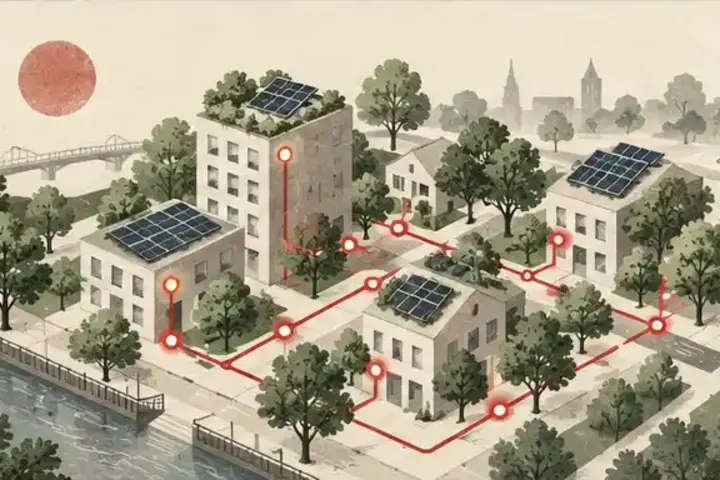
Earth ObservationFinding brick kilns and mapping land from space.Life in the lab
All photos All stories
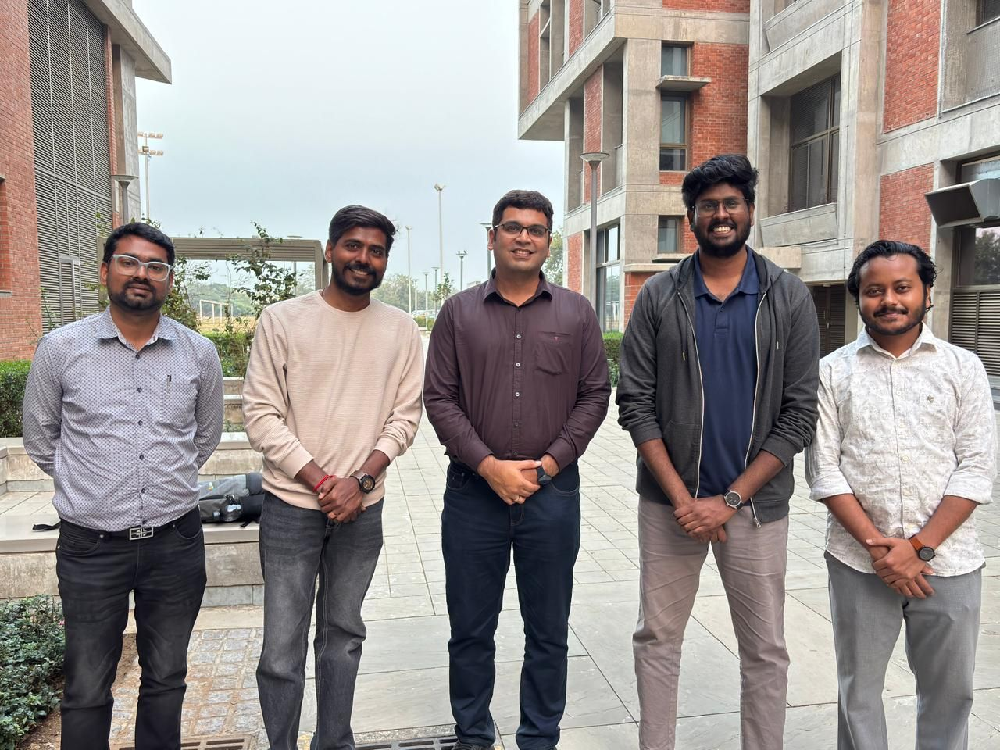

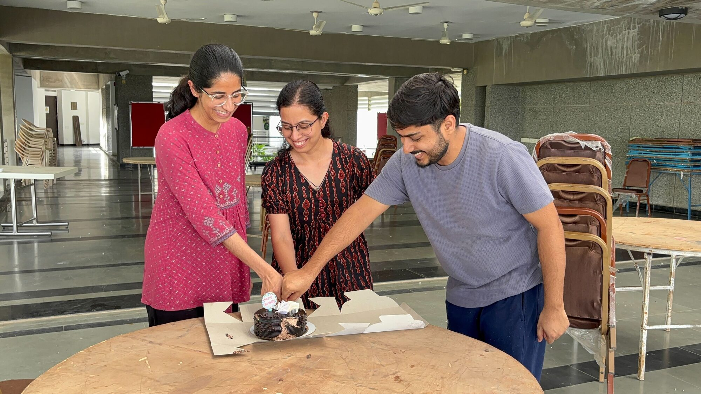

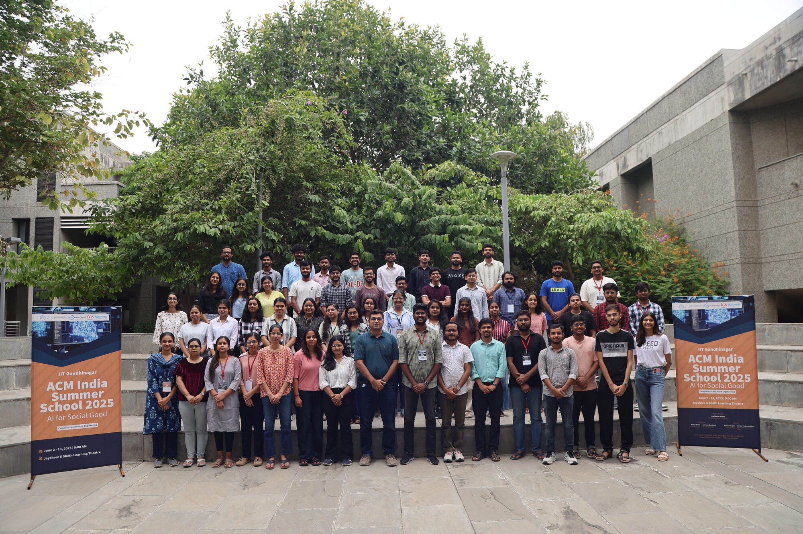

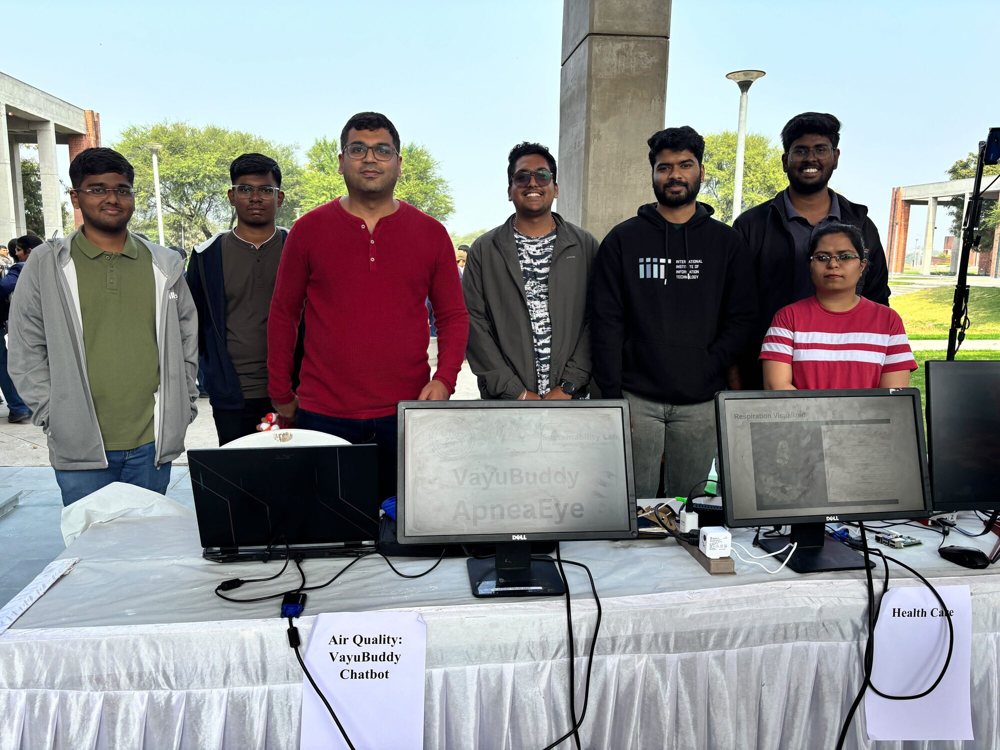

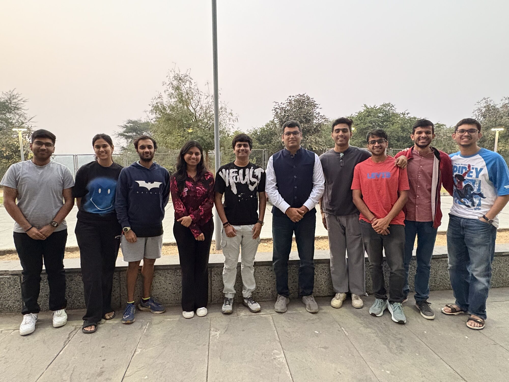
No matching items
In their words
Selected work
All publicationsLatest
All news
Sep 2026PaperTwo research announcements: FlowSat accepted at BMVC 2026, and Efficient Time Series SSL via Signal Descriptors accepted for a Short Presentation at IEEE DSAA 2026. Paper PDFs, research summaries and code links are now available.
Jun 2026PaperPaper accepted (oral) at the MILETS Workshop @ ACM KDD 2026: Feature-Informed Self-Supervised Learning for Time Series Understanding!
Jun 2026AwardNILMBench2026 wins the Best Paper Award — Runner-Up at BuildSys 2026 (ACM Sustainability Week, Banff, Canada)! Led by 2nd-year undergraduates Aayush Kuloor, Anurag Singh, and Harsh Dhru.
May 2026PaperThermEval accepted at KDD 2026! Benchmarking vision-language models on thermal imagery with Ayush Shrivastava, Kirtan Gangani, Laksh Jain, and Mayank Goel (CMU).
May 2026PaperNILMBench2026 accepted at BuildSys 2026! A reproducible benchmark for energy disaggregation, led entirely by 2nd-year undergraduates Aayush Kuloor, Anurag Singh, and Harsh Dhru.
No matching items
Supported by
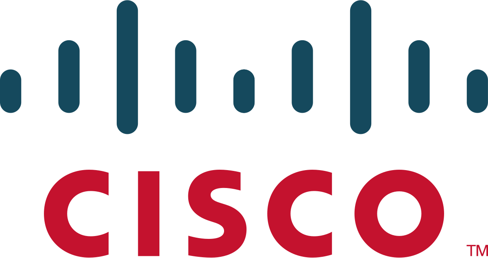
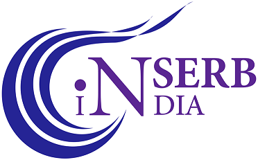
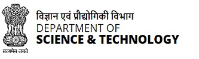